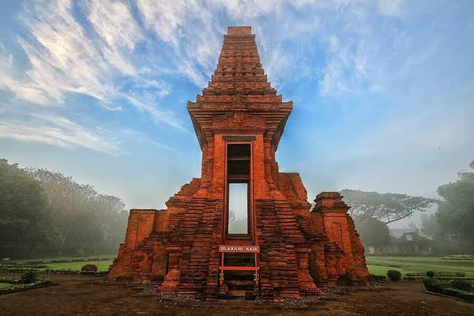

Petualangan
Candi Bajang Ratu
Perjalananmu dimulai dari sebuah peninggalan budaya. Amati, baca, pilih, lalu selesaikan tantangannya.
Kamu sudah tiba di Candi Bajang Ratu.
Hari ini kamu berperan sebagai penjelajah muda. Tugasmu adalah mengamati lingkungan candi, membaca informasi, lalu mengambil keputusan untuk menyelesaikan misi.
Perhatikan setiap petunjuk karena keputusanmu akan menentukan langkah berikutnya.
Temukan bagian menarik dari Candi Bajang Ratu!
Amati gambar berikut, lalu klik bagian candi yang ingin kamu pelajari.

Bagian Candi
Informasi bagian candi akan muncul di sini.
Kenali Candi Bajang Ratu
Kamu sudah menemukan beberapa informasi saat mengeksplorasi Candi Bajang Ratu. Sekarang, baca kembali informasi berikut karena akan digunakan untuk menyelesaikan tantangan selanjutnya.
Candi Bajang Ratu
Candi Bajang Ratu merupakan salah satu peninggalan bersejarah yang berada di kawasan Trowulan, Mojokerto.
Bentuk dan Bagian Candi
Candi memiliki beberapa bagian dengan bentuk dan ukuran yang dapat diamati. Bentuk tersebut dapat membantu kita mengenali dan mempelajari berbagai konsep matematika.
Ukuran dan Perhitungan
Informasi tentang panjang, lebar, atau ukuran suatu bagian dapat digunakan untuk melakukan perhitungan sederhana.
Kamu menemukan beberapa bagian menarik dari Candi Bajang Ratu.
Kamu ingin mengamati candi lebih dekat. Pilih tindakan yang menurutmu tepat sebagai seorang penjelajah yang menjaga peninggalan sejarah.
Hitung Luas Area
Kamu menemukan sebuah area berbentuk persegi panjang di sekitar candi. Gunakan informasi berikut untuk menentukan luasnya.
Seret jawaban yang tepat ke kotak di bawah.
Candi Bajang Ratu Bereaksi!
Kamu berhasil menggunakan informasi yang ditemukan dan menyelesaikan tantangan numerasi.
Hebat, Penjelajah!
Kamu berhasil menyelesaikan perjalanan di Candi Bajang Ratu.